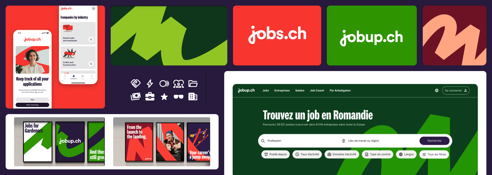
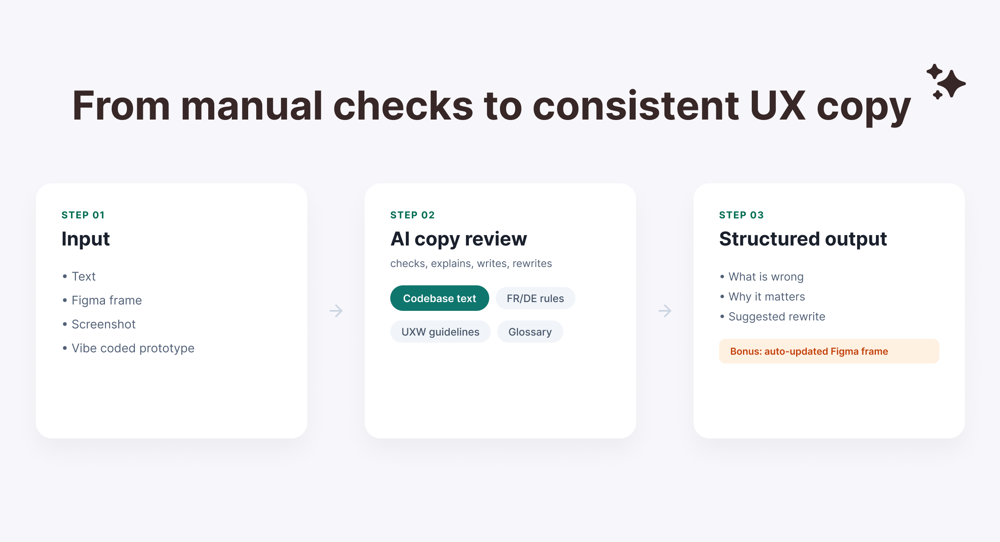

UX Project LeadDesign System2025/2026
User researchDesign system2024
User flow optimizationData analysisUX writingMobile and web design2022
AI-skillsProduct discovery2026

AI-skillsUX writing2026
Medium ArticleVibe coding2026
Medium ArticleAI design workflowVibe coding2025